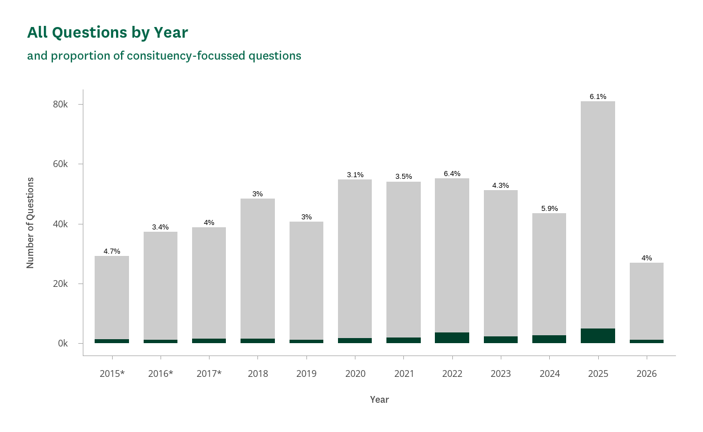
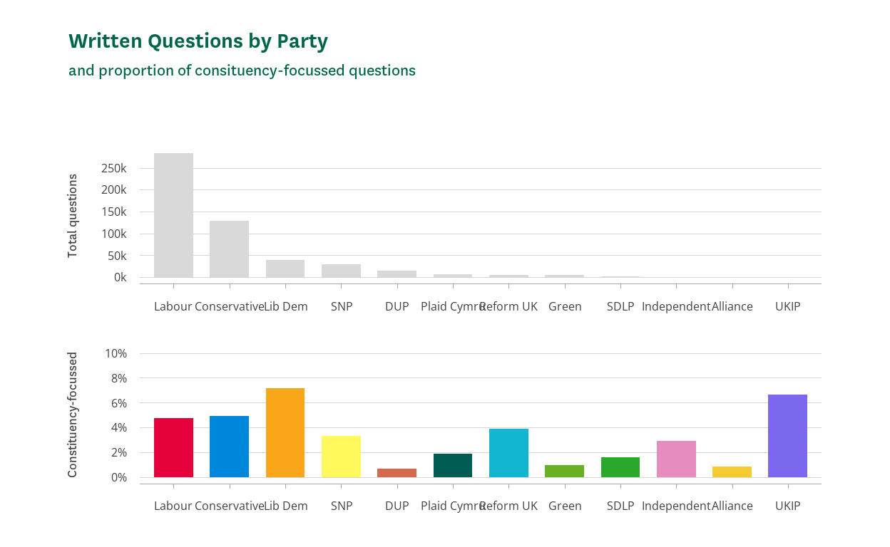
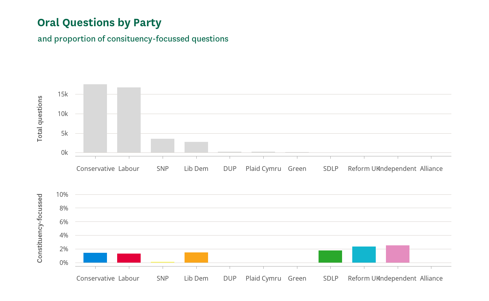
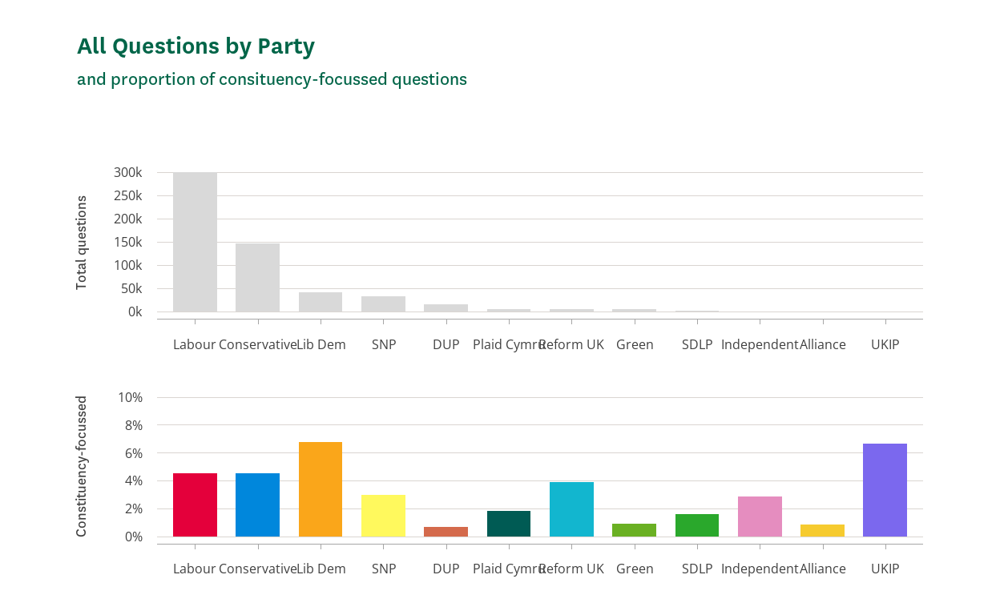

Introduction
To what extent do MPs use parliamentary questions as a tool for representing constituents’ interests?
This analysis aims to explore whether MPs use parliamentary questions as a tool for representing constituents and their interests, and if so to what extent this is the case. This will be examined through textual analysis of oral and written parliamentary questions submitted by members of parliament, assessing whether these reflect constituency concerns. Ultimately, we find that parliamentary questions do serve as an important tool of constituency representation, but that they are more often used for broader purposes of scrutiny of legislation and addressing national questions.
Data
The oral and written questions data was sourced directly from the UK Parliament Application Programming Interface (API), which allows data on a vast number of parliamentary statistics to be fetched directly from Parliament as an original source. The information on members of parliament was sourced from the Members’ Names Information Service API, via the clmnis R software package, published by the House of Commons Library. The list of wards within each parliamentary constituency, which is used to include local place names in the analysis, was sourced from the Office for National Statistics.
Method
Using the method outlined by Martin1, I will conduct textual analysis of both written and oral questions submitted by MPs. To test this, I am using 41,715 Oral Questions from the period November 2017 to March 2026 and 458,888 written questions from between July 2015 and March 2026. This protracted period covers multiple governments formed by multiple political parties, and so should provide an adequate sample large enough to disregard any party effects on the use of questions as constituency-representation tool.
The oral and written questions data was sourced directly from the UK Parliament Application Programming Interface (API), which allows data on a vast number of parliamentary statistics to be fetched directly from Parliament as an original source. The information on members of parliament were sourced from the Members’ Names Information Service API, via the clmnis R software package, published by the House of Commons Library. The list of wards within each parliamentary constituency was sourced from the Office for National Statistics.
Martin’s method relied upon manual classification and coding of question texts on whether or not they presented a constituency focus. While this is the most accurate method for classifying questions on constituency representation, this is a long and time-consuming process and as such is not feasible within the scope of this paper. However, a similar level of analysis can be achieved using a dictionary approach, which while not as accurate as manual coding, is able to provide enough detail particularly with the large sample of questions while being quicker to conduct. As such, the text of both oral and written questions were compared with three dictionaries of more general constituency and local representation terms. One of constituency representation terms, e.g. “local area”, “community”; another specifically targeting voicing constituent concerns, e.g. “a constituent has written to me”, “residents are concerned”. Another dictionary was included on local services, e.g. “high street”, “school”, “GP surgery”, etc. These terms are all prepended with ‘local’ to avoid picking up questions asked in the greater national context on these issues. Additionally, a list of corresponding local place names formed a final dictionary. These were compiled from the ward names of each of the district, borough, city council or unitary authority wards within each constituency.
While it could be argued that human coding is more internally valid2, it is also susceptible to human-induced noise within coding, as there is a degree of subjectivity with human coding that does not results with computer coding through the dictionary approach3. As such, while there are limited concerns around computer coding, particularly as this lacks the additional context human coders are available to provide for the context of parliamentary questions, this is rather more simple in that questions either represent constituency interests or they do not. In addition to this, the use of dictionary coding rather than manual coding allows a much larger corpus of questions to be analysed. Indeed, this paper includes over 500,000 questions in its analysis – more than four times greater than the sample used by Martin. While this does not inherently mean this method is superior, particularly given the less precise coding that results from computerised dictionary techniques, this does allow for results to be more generalisable given both the greater sample size and longer time period taken into account.
It is important to note however, that there were some significant limitations on the data sources. Firstly, the text of written questions made by MPs in Parliament fetched from the Parliament API were limited to 255 characters. This meant that responses longer than 255 characters were truncated and therefore could not be properly analysed against the dictionaries. A question that may mention a word or phrase after the cutoff would not register as being locally-representative and would instead count as being a non-constituency-focussed questions, therefore artificially deflating the proportion of questions made by MPs that are about constituents’ issues. As a result, questions with text longer than this 255-character limit had to be filtered out as the question could not be parsed for dictionary terms in its entirety. These truncated questions comprised around 28% of the total number of written parliamentary questions. As such, there is somewhat of a bias towards shorter written questions in the dataset, which may have affected the results observed. Additionally, there is a slight mismatch between the periods of time covered for Oral and Written questions. There are twenty-seven months of data missing from the Oral questions data, between July 2015 and November 2017, that are present in the Written questions data. While the analysis is only concerned with the content of questions themselves, this discrepancy should not have a material effect on the results, though is important to note for the purposes of comparing the number of questions posed.
Analysis
1. Setup
Show code
library(dplyr)
library(fuzzyjoin)
library(ggplot2)
library(stringr)
library(lubridate)
library(clmnis)
library(clcharts)
library(quanteda)
library(data.table)
library(stringi)
library(gt)
library(scales)
library(tidyr)
library(patchwork)
party_membership <- clmnis::fetch_mps_party_memberships()
party_membership <- party_membership %>%
left_join(party_lookup, by = "party_name")
party_membership <- party_membership %>%
select(mnis_id, party_mnis_id, party_name, party_membership_start_date, party_membership_end_date, party_colour)
members <- clmnis::fetch_commons_memberships()
members <- members %>% filter(is.na(seat_incumbency_end_date) | seat_incumbency_end_date >= "2015-01-01")
members <- members %>%
mutate(seat_incumbency_end_date = if_else(
is.na(seat_incumbency_end_date),
as.Date("2100-01-01"),
seat_incumbency_end_date
))
party_membership <- party_membership %>%
mutate(party_membership_end_date = if_else(
is.na(party_membership_end_date),
as.Date("2100-01-01"),
party_membership_end_date
))
mps <- fuzzy_left_join(
members,
party_membership,
by = c(
"mnis_id" = "mnis_id",
"seat_incumbency_start_date" = "party_membership_end_date",
"seat_incumbency_end_date" = "party_membership_start_date"
),
match_fun = list(`==`, `<=`, `>=`)
)
mps <- mps %>%
mutate(
seat_incumbency_end_date = na_if(seat_incumbency_end_date, as.Date("2100-01-01")),
party_membership_end_date = na_if(party_membership_end_date, as.Date("2100-01-01"))
)
mps <- mps %>%
mutate(
seat_incumbency_end_date = na_if(seat_incumbency_end_date, as.Date("2100-01-01")),
party_membership_end_date = na_if(party_membership_end_date, as.Date("2100-01-01"))
)
rm(party_membership, members, party_lookup)
mps <- mps %>%
mutate(mnis_id.y = NULL) %>%
rename(mnis_id = mnis_id.x)
oq_raw <- read.csv("datasets/oral_questions_2015_2026_flattened.csv")
oq_raw <- oq_raw %>%
rename(mnis_id = AskingMemberId,
dateTabled = TabledWhen,
questionText = QuestionText)
wq2015 <- read.csv("datasets/written_questions_2015.csv")
wq2016 <- read.csv("datasets/written_questions_2016.csv")
wq2017 <- read.csv("datasets/written_questions_2017.csv")
wq2018 <- read.csv("datasets/written_questions_2018.csv")
wq2019 <- read.csv("datasets/written_questions_2019.csv")
wq2020 <- read.csv("datasets/written_questions_2020.csv")
wq2021 <- read.csv("datasets/written_questions_2021.csv")
wq2022 <- read.csv("datasets/written_questions_2022.csv")
wq2023 <- read.csv("datasets/written_questions_2023.csv")
wq2024 <- read.csv("datasets/written_questions_2024.csv")
wq2025 <- read.csv("datasets/written_questions_2025.csv")
wq2026 <- read.csv("datasets/written_questions_2026.csv")
wq_raw <- bind_rows(
wq2015, wq2016, wq2017, wq2018, wq2019, wq2020, wq2021, wq2022, wq2023, wq2024, wq2025,
wq2026)
rm(wq2015, wq2016, wq2017, wq2018, wq2019, wq2020, wq2021, wq2022, wq2023, wq2024, wq2025,
wq2026)
wq_raw <- wq_raw %>%
rename_with(~ gsub("^value_", "", .x)) %>%
rename(mnis_id = askingMemberId) %>%
filter(house == "Commons")
wards <- read.csv("Ward_to_Westminster_Parliamentary_Constituency_to_Local_Authority_District_to_Upper_Tier_Local_Authority_(December_2022)_Lookup_in_the_United_Kingdom.csv")
wards <- wards %>% mutate(
area_name = str_trim(WD22NM, side = "both"),
constituency_name = PCON22NM,
.keep = "none")
local_areas_by_constituency <-
wards %>%
select(constituency_name, area_name) %>%
group_by(constituency_name) %>%
summarise(local_places = list(unique(area_name)))
mps <- mps %>%
left_join(
local_areas_by_constituency,
by = join_by(constituency_name))
rm(wards, local_areas_by_constituency)2. Merge Written Questions
Show code
setDT(mps)
setDT(wq_raw)
setDT(oq_raw)
mps[, mnis_id := as.character(mnis_id)]
wq_raw[, mnis_id := as.character(mnis_id)]
oq_raw[, mnis_id := as.character(mnis_id)]
mps[, party_membership_end_date :=
fifelse(is.na(party_membership_end_date),
Sys.Date(),
party_membership_end_date)]
mps <- mps[!is.na(party_membership_start_date)]
mps_for_join <- mps[
, .(
party_membership_start_date = min(party_membership_start_date, na.rm = TRUE),
party_membership_end_date = max(party_membership_end_date, na.rm = TRUE),
party_name = first(party_name),
party_colour = first(party_colour)
),
by = mnis_id
]
setkey(mps_for_join, mnis_id, party_membership_start_date, party_membership_end_date)
wq_for_join <- copy(wq_raw)[
, `:=`(
date_start = as.Date(dateTabled),
date_end = as.Date(dateTabled)
)
]
setkey(wq_for_join, mnis_id, date_start, date_end)
wq <- foverlaps(
wq_for_join,
mps_for_join,
by.x = c("mnis_id", "date_start", "date_end"),
by.y = c("mnis_id",
"party_membership_start_date",
"party_membership_end_date"),
type = "within",
nomatch = NA
)3. Merge Oral Questions
Show code
setDT(mps)
setDT(oq_raw)
mps[, mnis_id := as.character(mnis_id)]
oq_raw[, mnis_id := as.character(mnis_id)]
mps[, party_membership_end_date :=
fifelse(is.na(party_membership_end_date),
Sys.Date(),
party_membership_end_date)]
mps <- mps[!is.na(party_membership_start_date)]
mps_for_join <- mps[
, .(
party_membership_start_date = min(party_membership_start_date),
party_membership_end_date = max(party_membership_end_date),
party_name = first(party_name),
party_colour = first(party_colour)
),
by = mnis_id
]
setkey(mps_for_join, mnis_id, party_membership_start_date, party_membership_end_date)
oq_for_join <- copy(oq_raw)[
, `:=`(
date_start = as.Date(dateTabled),
date_end = as.Date(dateTabled)
)
]
setkey(oq_for_join, mnis_id, date_start, date_end)
oq <- foverlaps(
oq_for_join,
mps_for_join,
by.x = c("mnis_id", "date_start", "date_end"),
by.y = c("mnis_id",
"party_membership_start_date",
"party_membership_end_date"),
type = "within",
nomatch = NA
)
mps[, local_places := Map(
function(places, const) unique(c(places, const)),
local_places,
constituency_name
)]
mps_places <- mps[
, .(
local_places = first(local_places)
),
by = mnis_id
]
oq <- merge(
oq,
mps_places,
by = "mnis_id",
all.x = TRUE
)
wq <- merge(
wq,
mps_places,
by = "mnis_id",
all.x = TRUE
)
rm(mps_for_join, mps_places, oq_for_join, wq_for_join)
oq[, local_hits := mapply(
function(text, places) {
sum(stri_detect_fixed(tolower(text), tolower(places)))
},
questionText,
local_places
)]
oq[, constituency_flag := local_hits > 0]
wq[, local_hits := mapply(
function(text, places) {
sum(stri_detect_fixed(tolower(text), tolower(places)))
},
questionText,
local_places
)]
wq[, constituency_flag := local_hits > 0]4. Create Dictionaries
Show code
generic_constituency <- c(
"constituent", "constituents", "my constituency", "local",
"area", "borough", "town", "community", "postcode", "region",
"my area", "residents in my area", "in my area", "in my constituency",
"local residents", "local people", "local area", "my borough",
"constituent in", "a constituent in", "many constituents in",
"in my constituency", "in my seat",
"in my constituency of", "in my marginal seat", "local resident",
"local residents", "residents of", "people in", "voters in",
"community in", "my local area", "in my area", "in our area",
"for my local", "for my constituents", "for our constituents",
"constituency of", "borough of", "borough council", "district of",
"ward of", "district council", "town of", "town council",
"county council", "parish council", "town centre", "village centre",
"town hall", "village hall", "city hall", "village of",
"village council", "postcode area"
)
welfare_services <- c(
"local nhs", "school", "hospital", "gp", "clinic", "surgery",
"schools", "housing", "bus", "train", "railway", "station", "council",
"library", "libraries", "social care", "social services",
"social housing", "rent", "homelessness", "affordable housing",
"care home", "care", "local hospital", "local hospital in",
"local school", "local school in", "academy", "local doctor",
"local gp", "local surgery", "local council", "council ward",
"council area", "local authority", "local authority area",
"local bus", "local train", "railway station", "bus station",
"local employer", "local business", "local economy", "local high street",
"local shopping centre", "local park", "local park in",
"local sports centre", "local leisure centre", "local swimming pool",
"local leisure facility", "local housing", "local housing project",
"housing estate", "send", "adult health and social care", "camhs",
"local service", "local services", "council service", "council services",
"housing of", "library in", "local library", "local museum",
"local museum in", "local museum service", "local leisure service",
"local leisure centre", "local leisure facility", "parking",
"local roads", "maintanence", "local police", "local community",
"police station", "front desk"
)
explicit_voice <- c(
"a constituent wrote", "constituents are concerned",
"my constituents are worried", "resident raised",
"many people in my area", "local people are concerned",
"a constituent contacted me", "constituents have asked me",
"resident has written", "a local resident has raised"
)
make_phrases <- function(x) {
ifelse(grepl(" ", x), phrase(x), x)
}
generic_constituency <- make_phrases(generic_constituency)
welfare_services <- make_phrases(welfare_services)
explicit_voice <- make_phrases(explicit_voice)
dict_base <- dictionary(list(
generic_constituency = generic_constituency,
welfare_services = welfare_services,
explicit_voice = explicit_voice
))5. Text Analysis - Oral Questions
Show code
# Create corpus
corp_oq <- corpus(oq, text_field = "questionText")
# Tokenise
toks_oq <- tokens(
corp_oq,
remove_punct = TRUE,
remove_numbers = TRUE,
remove_symbols = TRUE
)
toks_oq <- tokens_tolower(toks_oq)
toks_oq <- tokens_remove(toks_oq, stopwords("en"))
# Build data frame
dfm_oq <- dfm(toks_oq)
# Apply dictionaries
dfm_oq_dict <- dfm_lookup(dfm_oq, dict_base)
oq_dict <- convert(dfm_oq_dict, to = "data.frame")[, -1]
oq_enriched <- cbind(
oq,
oq_dict
)6. Text Analysis - Written Questions
Show code
# Create coprus
corp_wq <- corpus(wq, text_field = "questionText")
# Tokenise
toks_wq <- tokens(
corp_wq,
remove_punct = TRUE,
remove_numbers = TRUE,
remove_symbols = TRUE
)
toks_wq <- tokens_tolower(toks_wq)
toks_wq <- tokens_remove(toks_wq, stopwords("en"))
# Build data frame
dfm_wq <- dfm(toks_wq)
# Apply dictionaries
dfm_wq_dict <- dfm_lookup(dfm_wq, dict_base)
wq_dict <- convert(dfm_wq_dict, to = "data.frame")[, -1]
wq_enriched <- cbind(
wq,
wq_dict
)
# Create flags
oq_enriched[, generic_flag := generic_constituency > 0]
oq_enriched[, welfare_flag := welfare_services > 0]
oq_enriched[, voice_flag := explicit_voice > 0]
wq_enriched[, generic_flag := generic_constituency > 0]
wq_enriched[, welfare_flag := welfare_services > 0]
wq_enriched[, voice_flag := explicit_voice > 0]7. Create Data Summary Table
Show code
oq_enriched[, q_type := "Oral"]
wq_enriched[, q_type := "Written"]
all_q <- rbindlist(list(oq_enriched, wq_enriched), use.names = TRUE, fill = TRUE)
table_party_oq <- oq_enriched[, .(
total_pqs = .N,
percent_all = 100 * .N / nrow(oq_enriched),
national = sum(!constituency_flag),
local = sum(constituency_flag),
percent_local = 100 * mean(constituency_flag)
), by = party_name][order(-total_pqs)]
table_party_wq <- wq_enriched[, .(
total_pqs = .N,
percent_all = 100 * .N / nrow(wq_enriched),
national = sum(!constituency_flag),
local = sum(constituency_flag),
percent_local = 100 * mean(constituency_flag)
), by = party_name][order(-total_pqs)]
table_party_all <- all_q[, .(
all_total = .N,
all_local = sum(constituency_flag),
all_percent_local = 100 * mean(constituency_flag)
), by = party_name]
table_party_combined <- Reduce(
function(x, y) merge(x, y, by = "party_name", all = TRUE),
list(table_party_oq, table_party_wq, table_party_all)
)
setnames(
table_party_combined,
old = c("total_pqs.x", "percent_all.x", "national.x", "local.x", "percent_local.x",
"total_pqs.y", "percent_all.y", "national.y", "local.y", "percent_local.y",
"all_total", "all_local", "all_percent_local"),
new = c("oral_total", "oral_percent_all", "oral_national", "oral_local", "oral_percent_local",
"written_total", "written_percent_all", "written_national", "written_local", "written_percent_local",
"all_total", "all_local", "all_percent_local"),
skip_absent = TRUE
)
table_party_combined <- table_party_combined %>%
mutate(
Party = party_name,
`Oral Total` = oral_total,
`Oral National` = oral_national,
`Oral Local` = oral_local,
`Oral Local %` = signif(oral_percent_local, digits = 3),
`Written Total` = written_total,
`Written National` = written_national,
`Written Local` = written_local,
`Written Local %` = signif(written_percent_local, digits = 3),
`All Total` = all_total,
`All Local` = all_local,
`All Local %` = signif(all_percent_local, digits = 3),
oral_percent_all = NULL,
written_percent_all = NULL,
.keep = "unused"
)
percent_cols <- c(
"Oral Local %",
"Written Local %",
"All Local %"
)
gt_table <- table_party_combined %>%
gt() %>%
tab_spanner("Oral Questions",
columns = starts_with("Oral ")) %>%
tab_spanner("Written Questions",
columns = starts_with("Written ")) %>%
tab_spanner("All Questions",
columns = starts_with("All ")) %>%
fmt_number(columns = c(`Oral Total`, `Written Total`, `All Total`), decimals = 0) %>%
fmt(columns = percent_cols, fns = function(x) r(round, 2)) %>%
grand_summary_rows(
columns = c(
`Oral Total`, `Oral National`, `Oral Local`,
`Written Total`, `Written National`, `Written Local`,
`All Total`, `All Local`
),
fns = list(Total = ~sum(., na.rm = TRUE))
) %>%
grand_summary_rows(
columns = percent_cols,
fns = list(Total = ~mean(., na.rm = TRUE))
)
gt_table <- table_party_combined %>%
gt() %>%
tab_spanner("Oral Questions", columns = starts_with("Oral ")) %>%
tab_spanner("Written Questions", columns = starts_with("Written ")) %>%
tab_spanner("All Questions", columns = starts_with("All ")) %>%
cols_label(
`Oral Total` = "Total",
`Oral National` = "National",
`Oral Local` = "Local",
`Oral Local %` = "Local %",
`Written Total` = "Total",
`Written National` = "National",
`Written Local` = "Local",
`Written Local %` = "Local %",
`All Total` = "Total",
`All Local` = "Local",
`All Local %` = "Local %"
)
gt_table <- gt_table %>%
grand_summary_rows(
columns = c(
`Oral Total`, `Oral National`, `Oral Local`,
`Written Total`, `Written National`, `Written Local`,
`All Total`, `All Local`
),
fns = list(Total = ~sum(., na.rm = TRUE))
) %>%
grand_summary_rows(
columns = percent_cols,
fns = list(Total = ~mean(., na.rm = TRUE))
)8. Format and Present Table
Show code
gt_table <- gt_table %>%
fmt_number(columns = numeric_cols, decimals = 0) %>%
fmt(columns = percent_cols, fns = function(x) round(x, 3))
gt_table <- gt_table %>%
cols_align(
align = "center",
columns = numeric_cols
)
gt_table <- gt_table %>%
tab_footnote(
footnote = "UKIP did not have any MPs eligible to ask Oral Questions during this period, so values are shown as NA.",
locations = cells_column_spanners("Oral Questions")
)
gt_table| Party |
Oral Questions1
|
Written Questions
|
All Questions
|
|||||||||
|---|---|---|---|---|---|---|---|---|---|---|---|---|
| Total | National | Local | Local % | Total | National | Local | Local % | Total | Local | Local % | ||
| Alliance | 37 | 37 | 0 | 0 | 1,050 | 1,041 | 9 | 0.857 | 1,087 | 9 | 0.828 | |
| Conservative | 17,778 | 17,527 | 251 | 1.41 | 135,948 | 129,539 | 6,409 | 4.71 | 153,726 | 6,660 | 4.33 | |
| Democratic Unionist Party | 249 | 249 | 0 | 0 | 15,679 | 15,575 | 104 | 0.663 | 15,928 | 104 | 0.653 | |
| Green Party | 87 | 87 | 0 | 0 | 5,166 | 5,118 | 48 | 0.929 | 5,253 | 48 | 0.914 | |
| Independent | 41 | 40 | 1 | 2.44 | 1,174 | 1,141 | 33 | 2.81 | 1,215 | 34 | 2.8 | |
| Labour | 16,901 | 16,679 | 222 | 1.31 | 296,660 | 283,236 | 13,424 | 4.53 | 313,561 | 13,646 | 4.35 | |
| Liberal Democrat | 2,763 | 2,723 | 40 | 1.45 | 42,263 | 39,447 | 2,816 | 6.66 | 45,026 | 2,856 | 6.34 | |
| Plaid Cymru | 190 | 190 | 0 | 0 | 6,187 | 6,071 | 116 | 1.87 | 6,377 | 116 | 1.82 | |
| Reform UK | 44 | 43 | 1 | 2.27 | 6,166 | 5,935 | 231 | 3.75 | 6,210 | 232 | 3.74 | |
| Respect Party | 10 | 10 | 0 | 0 | 17 | 15 | 2 | 11.8 | 27 | 2 | 7.41 | |
| Scottish National Party | 3,530 | 3,527 | 3 | 0.085 | 30,574 | 29,588 | 986 | 3.22 | 34,104 | 989 | 2.9 | |
| Social Democratic & Labour Party | 57 | 56 | 1 | 1.75 | 1,509 | 1,485 | 24 | 1.59 | 1,566 | 25 | 1.6 | |
| Traditional Unionist Voice | 5 | 4 | 1 | 20 | 247 | 244 | 3 | 1.21 | 252 | 4 | 1.59 | |
| UK Independence Party | NA | NA | NA | NA | 273 | 256 | 17 | 6.23 | 273 | 17 | 6.23 | |
| Ulster Unionist Party | 23 | 23 | 0 | 0 | 499 | 494 | 5 | 1 | 522 | 5 | 0.958 | |
| Total | — | 41715 | 41195 | 520 | 2.193929 | 543412 | 519185 | 24227 | 3.455267 | 585127 | 24747 | 3.097533 |
| 1 UKIP did not have any MPs eligible to ask Oral Questions during this period, so values are shown as NA. | ||||||||||||
9. Visualisation - Written Questions
Show code
plot_df <- wq_enriched %>%
filter(!party_name %in% c("Respect", "TUV", "UUP")) %>%
mutate(local_focus = ifelse(local_flag, "Local-focused", "All questions")) %>%
count(party_name, party_colour, local_focus) %>%
pivot_wider(names_from = local_focus, values_from = n, values_fill = 0) %>%
mutate(
pct_local = ifelse(`All questions` > 0, `Local-focused` / `All questions` * 100, NA_real_)
) %>%
arrange(desc(`All questions`)) %>%
mutate(party_name = factor(party_name, levels = party_name))
p1 <- ggplot(plot_df, aes(x = party_name, y = `All questions`)) +
geom_col(fill = "#D9D9D9", width = 0.7) +
scale_y_continuous(
breaks = seq(0, 300000, by = 50000),
labels = function(x) paste0(x / 1000, "k")
) +
labs(x = NULL, y = "Total questions") +
theme_commonslib(axes = "b", grid = "h", caption_position = "left")
p2 <- ggplot(plot_df, aes(x = party_name, y = pct_local, fill = party_name)) +
geom_col(width = 0.7) +
scale_y_continuous(
limits = c(0, 10),
breaks = seq(0, 10, 2),
labels = function(x) paste0(x, "%")
) +
scale_fill_manual(values = setNames(plot_df$party_colour, plot_df$party_name)) +
labs(x = NULL, y = "Constituency-focussed") +
theme_commonslib(axes = "b", grid = "h", caption_position = "left") +
guides(fill = "none")
pa <- (p1 / p2)
pa <- add_commonslib_titles(pa,
title = "Written Questions by Party",
subtitle = "and proportion of consituency-focussed questions")
pa
10. Visualisation - Oral Questions
Show code
plot_df <- oq_enriched %>%
filter(!party_name %in% c("Respect", "TUV", "UUP")) %>%
mutate(local_focus = ifelse(local_flag, "Local-focused", "All questions")) %>%
count(party_name, party_colour, local_focus) %>%
pivot_wider(names_from = local_focus, values_from = n, values_fill = 0) %>%
mutate(
pct_local = ifelse(`All questions` > 0, `Local-focused` / `All questions` * 100, NA_real_)
) %>%
arrange(desc(`All questions`)) %>%
mutate(party_name = factor(party_name, levels = party_name))
p1 <- ggplot(plot_df, aes(x = party_name, y = `All questions`)) +
geom_col(fill = "#D9D9D9", width = 0.7) +
labs(x = NULL, y = "Total questions") +
scale_y_continuous(
breaks = seq(0, 20000, by = 5000),
labels = function(x) paste0(x / 1000, "k")
) +
theme_commonslib(axes = "b", grid = "h", caption_position = "left")
p2 <- ggplot(plot_df, aes(x = party_name, y = pct_local, fill = party_name)) +
geom_col(width = 0.7) +
scale_y_continuous(
limits = c(0, 10),
breaks = seq(0, 10, 2),
labels = function(x) paste0(x, "%")
) +
scale_fill_manual(values = setNames(plot_df$party_colour, plot_df$party_name)) +
labs(x = NULL, y = "Constituency-focussed") +
theme_commonslib(axes = "b", grid = "h", caption_position = "left") +
guides(fill = "none")
pb <- (p1 / p2)
pb <- add_commonslib_titles(pb,
title = "Oral Questions by Party",
subtitle = "and proportion of consituency-focussed questions")
pb
11. Visualisation - All Questions
Show code
enriched <- wq_enriched %>%
bind_rows(oq_enriched)
plot_df <- enriched %>%
filter(!party_name %in% c("Respect", "TUV", "UUP")) %>%
mutate(local_focus = ifelse(local_flag, "Local-focused", "All questions")) %>%
count(party_name, party_colour, local_focus) %>%
pivot_wider(names_from = local_focus, values_from = n, values_fill = 0) %>%
mutate(
pct_local = ifelse(`All questions` > 0, `Local-focused` / `All questions` * 100, NA_real_)
) %>%
arrange(desc(`All questions`)) %>%
mutate(party_name = factor(party_name, levels = party_name))
p1 <- ggplot(plot_df, aes(x = party_name, y = `All questions`)) +
geom_col(fill = "#D9D9D9", width = 0.7) +
scale_y_continuous(
breaks = seq(0, 3000000, by = 50000),
labels = function(x) paste0(x / 1000, "k")
) +
labs(x = NULL, y = "Total questions") +
theme_commonslib(axes = "b", grid = "h", caption_position = "left")
p2 <- ggplot(plot_df, aes(x = party_name, y = pct_local, fill = party_name)) +
geom_col(width = 0.7) +
scale_y_continuous(
limits = c(0, 10),
breaks = seq(0, 10, 2),
labels = function(x) paste0(x, "%")
) +
scale_fill_manual(values = setNames(plot_df$party_colour, plot_df$party_name)) +
labs(x = NULL, y = "Constituency-focussed") +
theme_commonslib(axes = "b", grid = "h", caption_position = "left") +
guides(fill = "none")
pc <- (p1 / p2)
pc <- add_commonslib_titles(pc,
title = "All Questions by Party",
subtitle = "and proportion of consituency-focussed questions")
pc
12. Visualisation - Questions by Year
Show code
plot_df <- enriched %>%
mutate(
date_tabled = ymd_hms(dateTabled),
year = year(date_tabled),
local_focus = ifelse(local_flag, "Local-focused", "All questions")
) %>%
count(year, local_focus) %>%
pivot_wider(
names_from = local_focus,
values_from = n,
values_fill = 0
) %>%
mutate(
total_qs = `All questions`,
pct_local = ifelse(total_qs > 0, `Local-focused` / total_qs * 100, NA_real_)
) %>%
arrange(year)
plot_df <- plot_df %>%
mutate(
year_label = case_when(
year %in% c(2015, 2016, 2017) ~ paste0(year, "*"),
TRUE ~ as.character(year)
)
)
p4 <- ggplot(plot_df, aes(x = factor(year_label))) +
geom_col(
aes(y = total_qs),
fill = "grey80",
width = 0.7
) +
geom_col(
aes(y = `Local-focused`),
fill = "#003f2b",
width = 0.7
) +
geom_text(
aes(
y = total_qs,
label = paste0(round(pct_local, 1), "%")
),
vjust = -0.5,
size = 3.5,
colour = "black"
) +
labs(
x = "Year",
y = "Number of Questions",
) +
scale_y_continuous(
breaks = seq(0, 80000, by = 20000),
labels = function(x) paste0(x / 1000, "k")
) +
theme_commonslib()
p4 <- p4 %>%
add_commonslib_titles(
title = "All Questions by Year",
subtitle = "and proportion of consituency-focussed questions")
p4
Findings
| Party |
Oral Questions1
|
Written Questions
|
All Questions
|
|||||||||
|---|---|---|---|---|---|---|---|---|---|---|---|---|
| Total | National | Local | Local % | Total | National | Local | Local % | Total | Local | Local % | ||
| Alliance | 37 | 37 | 0 | 0 | 1,050 | 1,041 | 9 | 0.857 | 1,087 | 9 | 0.828 | |
| Conservative | 17,778 | 17,527 | 251 | 1.41 | 135,948 | 129,539 | 6,409 | 4.71 | 153,726 | 6,660 | 4.33 | |
| Democratic Unionist Party | 249 | 249 | 0 | 0 | 15,679 | 15,575 | 104 | 0.663 | 15,928 | 104 | 0.653 | |
| Green Party | 87 | 87 | 0 | 0 | 5,166 | 5,118 | 48 | 0.929 | 5,253 | 48 | 0.914 | |
| Independent | 41 | 40 | 1 | 2.44 | 1,174 | 1,141 | 33 | 2.81 | 1,215 | 34 | 2.8 | |
| Labour | 16,901 | 16,679 | 222 | 1.31 | 296,660 | 283,236 | 13,424 | 4.53 | 313,561 | 13,646 | 4.35 | |
| Liberal Democrat | 2,763 | 2,723 | 40 | 1.45 | 42,263 | 39,447 | 2,816 | 6.66 | 45,026 | 2,856 | 6.34 | |
| Plaid Cymru | 190 | 190 | 0 | 0 | 6,187 | 6,071 | 116 | 1.87 | 6,377 | 116 | 1.82 | |
| Reform UK | 44 | 43 | 1 | 2.27 | 6,166 | 5,935 | 231 | 3.75 | 6,210 | 232 | 3.74 | |
| Respect Party | 10 | 10 | 0 | 0 | 17 | 15 | 2 | 11.8 | 27 | 2 | 7.41 | |
| Scottish National Party | 3,530 | 3,527 | 3 | 0.085 | 30,574 | 29,588 | 986 | 3.22 | 34,104 | 989 | 2.9 | |
| Social Democratic & Labour Party | 57 | 56 | 1 | 1.75 | 1,509 | 1,485 | 24 | 1.59 | 1,566 | 25 | 1.6 | |
| Traditional Unionist Voice | 5 | 4 | 1 | 20 | 247 | 244 | 3 | 1.21 | 252 | 4 | 1.59 | |
| UK Independence Party | NA | NA | NA | NA | 273 | 256 | 17 | 6.23 | 273 | 17 | 6.23 | |
| Ulster Unionist Party | 23 | 23 | 0 | 0 | 499 | 494 | 5 | 1 | 522 | 5 | 0.958 | |
| Total | — | 41715 | 41195 | 520 | 2.193929 | 543412 | 519185 | 24227 | 3.455267 | 585127 | 24747 | 3.097533 |
| 1 UKIP did not have any MPs eligible to ask Oral Questions during this period, so values are shown as NA. | ||||||||||||
The analysis was conducted of around 47,000 oral questions and 458,000 written questions, broadly across a ten-year period. The results in table 1 show clearly that, while there is some variation across parties, the level of constituency representation within questions is fairly consistent at around 4-6%. This broadly matches what is suggested in the existing literature, though perhaps to a graver extent than the literature implies. These results suggest that over 90% of questions in most cases did not pertain to local or constituent issues, suggesting that MPs do not make great use of parliamentary questions as a tool to represent constituents. That is not to say that MPs do not represent constituents as often as they perhaps should, solely that this is not significantly occurring through the use of questions.

The Hansard Society notes that there has been a sharp uptick in number of written questions submitted in the 2025 session of Parliament. There were an average of 604 written questions submitted per sitting day from July to December 2025, compared to an average of 451 in the period January to June 2025, and just 317 for the July to December 2024 period (Hansard Society, 2026). This was an even lower average of just 296 for all parliamentary sessions between 2010 and 2014. This indicates a significant change in the way that MPs are using parliamentary questions. The Hansard Society notes that this may be for a number of reasons, including a greater pressure from constituents to be seen to be taking measurable and quantifiable actions, as well as the advent of Artificial Intelligence making the drafting and submitting of parliamentary questions easier for members and their staff. This change of trend in the number of questions being asked is demonstrated clearly in figure 1. The sharp uptick of questions can be observed clearly in 2025. This did not however result in more constituency focussed questions. The proportion of constituency-focused questions remains relatively stable at the same 4-6% observed when looking at the by-party breakdown. This further supports the findings that MPs do not especially use questions to represent constituent interests.



The graphs show the same support for the findings that MPs do not greatly use parliamentary questions as a tool for representing constituents’ interests. The analysis, broken down by question type as well as presented together, does not show any significant outliers or upsets that we would not expect to see. The implication is much the same that no party has a proportion of questions that are representative greater than around 7%. The remaining 93% of questions at minimum, if not a greater proportion, are therefore not constituency-focussed or aimed at representing constituency interests. This is entirely expected given the general consensus presented by the existing literature.
As previous research suggests, the vast majority of oral questions are used in ministers’ questions to scrutinise government legislation or in parliamentary debates on national issues. While these questions can be framed in a local context, demonstrated by the albeit small share of oral questions that are constituency-focussed, these are not the primary use of oral questions. There is some variation by party – those that often more locally organised tend to be more locally representative. For example, the clear lead by the Liberal Democrats, with 7% of questions asked by their MPs being constituency-focussed, compared to around 5% for the two largest parties. However, this difference is minimal and is unlikely to represent any real-world impact in constituency representation.
R Packages
clchart
House of Commons Library / Oliver Hawkins, 2026 Available at: https://github.com/houseofcommonslibrary/clcharts
clmnis
House of Commons Library / Noel Dempsey, 2024 Available at: https://github.com/houseofcommonslibrary/clmnis
Data Sources
Members’ Names Information Service (MNIS)
House of Commons Library, 2026 [Online] Available at: https://data.parliament.uk/membersdataplatform/ [Accessed 2 April 2026]
Ward to Westminster Parliamentary Constituency to Local Authority District to County or Unitary Authority Lookup in the UK
Office for National Statistics, 2025 [Online] Available at: https://geoportal.statistics.gov.uk/ [Accessed 2 April 2026]
UK Parliament API
UK Parliament, 2026 [Online] Available at: https://api.parliament.uk/ [Accessed 2 April 2026]
References
Andeweg, R. B., 2014. Roles in Legislatures. In: S. Martin, T. Saalfeld & K. W. Strøm, eds. The Oxford Handbook of Legislative Studies. Oxford: Oxford University Press, pp. 267-285.
Borghetto, E. & Chaqués-Bonafont, L., 2019. Parliamentary Questions. In: F. R. Baumgartner, C. Breunig & E. Grossman, eds. Comparative Policy Agendas: Theory, Tools, Data. Oxford: Oxford University Press, pp. 282-299.
Campbell, R. & Bolet, D., 2022. Measuring MPs’ Responsiveness: How to Do it and Stay Out of Trouble. Political Studies Review, 20(2), pp. 175-183.
Hansard Society, 2026. Written Parliamentary Questions - Our evidence to the House of Commons Procedure Committee. [Online]
Available at: https://www.hansardsociety.org.uk/publications/submissions/written-parliamentary-questions-procedure-committee
[Accessed 17 March 2026].
Judge, D., 1973. Backbench Specialization – A Study in Parliamentary Questions. Parliamentary Affairs, Volume 27, pp. 171-186.
Martin, S., 2011a. Parliamentary Questions, the Behaviour of Legislators, and the Function of Legislatures: An Introduction. The Journal of Legislative Studies, 17(3), pp. 259-270.
Martin, S., 2011b. Using Parliamentary Questions to Measure Constituency Focus: An Application to the Irish Case. Political Studies, 59(2), pp. 472-488.
Martin, S. & Strøm, K., 2023. Legislative Assemblies: Voters, Members, and Leaders. Oxford: Oxford University Press.
Rush, M., 2001. The Role of the Member of Parliament Since 1868: From Gentlemen to Players. 1st ed. Oxford: Oxford University Press.
Schakel, W. et al., 2025. How political and social constituent traits affect the responsiveness of legislators: A Comparative Field Experiment. European Journal of Political Research, 64(1), pp. 229–250.
Slapin, J. B. & Proksch, S.-O., 2014. Words as Data: Content Analysis in Legislative Studies. In: S. Martin, T. Saalfeld & K. W. Strøm, eds. The Oxford Handbook of Legislative Studies. Oxford: Oxford University Press, pp. 126-144.
UK Parliament, 2026. Developer Hub – API Directory. [Online] Available at: https://developer.parliament.uk [Accessed 2 April 2026]
Contains Parliamentary and public sector information licensed under the Open Government Licence v3.0.
Martin, S., 2011. Parliamentary Questions, the Behaviour of Legislators, and the Function of Legislatures: An Introduction. The Journal of Legislative Studies, 17(3), pp. 259-270.↩︎
Slapin, J. B. & Proksch, S.-O., 2014. Words as Data: Content Analysis in Legislative Studies. In: S. Martin, T. Saalfeld & K. W. Strøm, eds. The Oxford Handbook of Legislative Studies. Oxford: Oxford University Press, pp. 126-144.↩︎
Ibid., p.137.↩︎